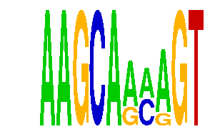

family_6 |
|---|
|  |
| Download PWM |
| Download instances (motifs) |
| Show motif distribution |
Query_ID | Query_Consensus | Subject_Name | Source_DB | Subject_ID | Length | Orientation | Offset | Divergence | Overlap | Subject_Consensus |
|---|---|---|---|---|---|---|---|---|---|---|
| family_6 | AAGCAAAAGT | MYB | HOCOMOCO | MYB_HUMAN.H10MO.C | 7 | as given | 6 | 0.744 | 4 | CAGTTRN |
| family_6 | AAGCAAAAGT | CATRRAGC | JASPAR | PF0134 | 8 | as given | -4 | 0.759 | 4 | CATGGAGC |
| family_6 | AAGCAAAAGT | YNTTTNNNANGCARM | JASPAR | PF0166 | 15 | as given | -8 | 0.838 | 7 | CNTTTNANANGCAGA |
| family_6 | AAGCAAAAGT | ETV3 | HOCOMOCO | ETV3_HUMAN.H10MO.D | 14 | reverse-complement | 5 | 0.890 | 5 | NNMRTTTGCACTTC |
| family_6 | AAGCAAAAGT | TBX5 | HOCOMOCO | TBX5_HUMAN.H10MO.D | 8 | as given | 6 | 0.900 | 4 | AGGTGTGA |
Sequence | Start_position (from start) | Start_position (from end) | Average conservation | Best conservation score | Instance_with_best_CS | Best_Z-score | Instance_with_best_ZS | Strand |
|---|---|---|---|---|---|---|---|---|
| chr2:17380028-17381028 | 451 | 461 | 0.0008 | 0.002 | AAGCAAMRGT | 12.672812 | AAGCARMAGT | 1 |
| chr2:76644683-76645683 | 387 | 397 | 0.0004 | 0.001 | AAGCARMAGT | 12.672812 | AAGCARMAGT | 1 |
| chr10:7849902-7850902 | 95 | 105 | 0.4422 | 0.826 | AAGCAAMRGT | 12.672812 | AAGCARMAGT | -1 |
| chr10:56100232-56101232 | 770 | 780 | 0.0008 | 0.003 | AAGCARMAGT | 12.672812 | AAGCARMAGT | 1 |
| chr10:53058509-53062044 | 2020 | 2030 | 0.0193 | 0.055 | AAGCARMAGT | 12.672812 | AAGCARMAGT | 1 |
| chr4:129472154-129473154 | 868 | 878 | 0.0784 | 0.12 | AAGCAAMRGT | 12.672812 | AAGCARMAGT | 1 |
| chr3:54166017-54167017 | 341 | 351 | 0.0066 | 0.014 | AAGCARMAGT | 12.672812 | AAGCARMAGT | -1 |
| chr13:45657187-45658187 | 460 | 470 | 0.0007 | 0.004 | AAGCAAMRGT | 12.672812 | AAGCARMAGT | 1 |
| chr2:76644683-76645683 | 371 | 381 | 0.0057 | 0.018 | AAGCAAMRGT | 16.827452 | AAGCAAMRGT | 1 |
| chr17:80546954-80547954 | 3 | 13 | 0.0021 | 0.004 | AAGCARMAGT | 16.827452 | AAGCAAMRGT | 1 |
| chr10:30557934-30559899 | 737 | 747 | 0.0009 | 0.003 | AAGCAAMRGT | 12.672812 | AAGCARMAGT | 1 |
| chr5:31873293-31874293 | 634 | 644 | 0 | 0 | AAGCARMAGT | 12.672812 | AAGCARMAGT | -1 |
| chr11:48603575-48604575 | 941 | 951 | 0.0611 | 0.07 | AAGCAAMRGT | 16.827452 | AAGCAAMRGT | 1 |
| chr11:11788299-11789299 | 617 | 627 | 0.0008 | 0.002 | AAGCAAMRGT | 12.672812 | AAGCARMAGT | 1 |
| chr1:58346510-58347510 | 313 | 323 | 0.1513 | 0.277 | AAGCARMAGT | 16.827452 | AAGCAAMRGT | 1 |
| chr17:10501742-10502742 | 997 | 1007 | 0.002 | 0.004 | AAGCARMAGT | 12.672812 | AAGCARMAGT | 1 |
| chr17:71370087-71371087 | 257 | 267 | 0.0226 | 0.033 | AAGCAAMRGT | 16.827452 | AAGCAAMRGT | -1 |